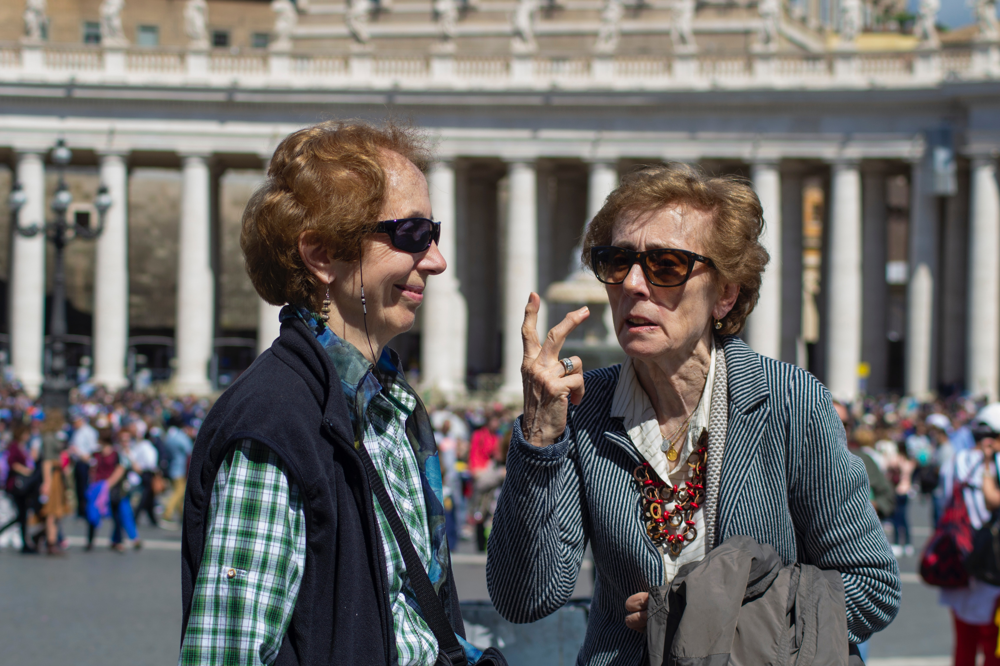
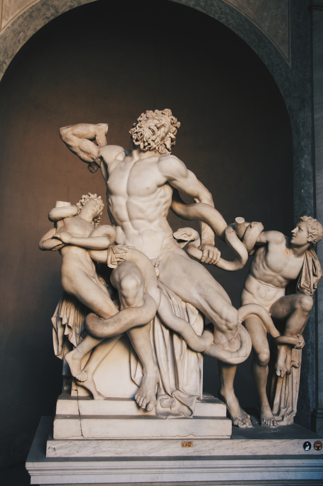

The Vatican’s history as the seat of the Catholic Church began with the construction of a basilica over St. Peter’s grave in Rome
in the 4th century A.D. The area developed into a popular pilgrimage site and commercial district, although it was abandoned following
the move of the papal court to France in 1309. After the Church returned in 1377, famous landmarks such the Apostolic Palace, the
Sistine Chapel and the new St. Peter’s Basilica were erected within the city limits. Vatican City was established in its current form as a
sovereign nation with the signing of the Lateran Pacts in 1929.
The population of Vatican City





How many people live in Vatican City?
Renowned for its incredible art, iconic structures and rich culture, some of you may forget that
for a small number of people the Vatican is also the place they call home.
The Vatican City is the smallest country in the world, and its own city-state ruled by the Pope.
Whilst it receives over 5 million visitors a year, not everyone who wanders its streets is a tourist.
There are also locals of the Vatican who get to live in the symbolic centre of the Roman Catholic Church.
With strict rules and regulations concerning citizenship however there are few who get to enjoy such a privilege, so how many people actually live in the Vatican City?
The Size & Population of Vatican City
The entire city covers just over 100 acres, equalling to about 0.44 square kilometres.
With the entire country
nestled inside the Capital city of Rome, located east of the River Tiber, its the smallest sovereign state in the world in both area and
population. As of 2020 it has a population of 801 people, according to the latest estimates from the UN’s World Population Prospect’s.
This ranks it 235th in the world. Unlike other countries, citizenship is not based on birth but granted only to those who reside in the Vatican because of their work or office. Cardinals who live in Vatican City or Rome, as well as diplomats of the Holy See, are also
considered citizens. And technically, no-one can be born in the Vatican as there are no hospitals! For those who wish to move to the Vatican must have their citizenship approved by the Pope, or papal authority.
Who are these people in the Vatican?
Due to the unique circumstances of Vatican City,
there is an array of different citizens living within. First, the head of Vatican City and the Catholic church calls this city their home, and of course the Pope!
The Pope’s official residence is within the Apostolic Palace, which is also known as the Vatican Palace or the Papal Palace. The palace has a series of apartments, museums, offices, and chapels.
Vatican City is the centre of all Catholic procedures, so the majority of citizens living here work directly for the church. A number of jobs include cardinals, guards, nuns, and members of the clergy.
Some citizens don’t even live within the city’s walls as they are diplomatic officials,
who spend all their time in other countries. Citizens who are born here usually don’t remain there their whole lives as most move to the Vatican in regard to a job with the church.
This means the Vatican, although small, has a large diversity of citizens, from Italian, Swiss, Argentinian and other nationalities.
As a result there is a mix of languages spoken in the Vatican, predominately Italian of course, but also Latin, French and other languages as pertaining to the current residents.
Life in the Vatican
Life in the Vatican has been described as “the greatest privilege” by Polish-Vatican journalist Magdalena Wolinska-Riedi who has lived and worked in the Vatican City since 2003.
She gained her citizenship when she married a Swiss Guard whose job it is to protect the pope. Their marriage was made official by Cardinal Joseph Ratzinger,
who would later become Pope Benedict XVI. The pair have two daughters who were both baptized by Pope Benedict. Being 1 of a mere 30 women in the world to hold Vatican Citizenship, Maddalena has naturally received much media interest, further encouraged by her role as presenter and journalist.
As a Catholic herself, Magdalena is not shy about sharing her life in the Vatican,
choosing to use her unique position to bring people closer to the Catholic Church. She explains that life in the Vatican is special.
Every night the gates to the city are closed and the whole place goes on lockdown until 6 am when the doors are reopened again.
Magdalena explains that this is the safest place on earth for her and her children as she sees the care and respect that everyone has for one another in the city, as well as the permanent presence of the Pope who can often be seen driving around.
But she also says it’s very normal in that it is also the place where she purchases her groceries, teaches her children to ride their bikes and walks to work.
Saying that the same rules applied to visitors must also be abided by its citizens, so no bare shoulders or short skirts are to be worn around the city, something which Magdalena says she barely thinks about anymore.